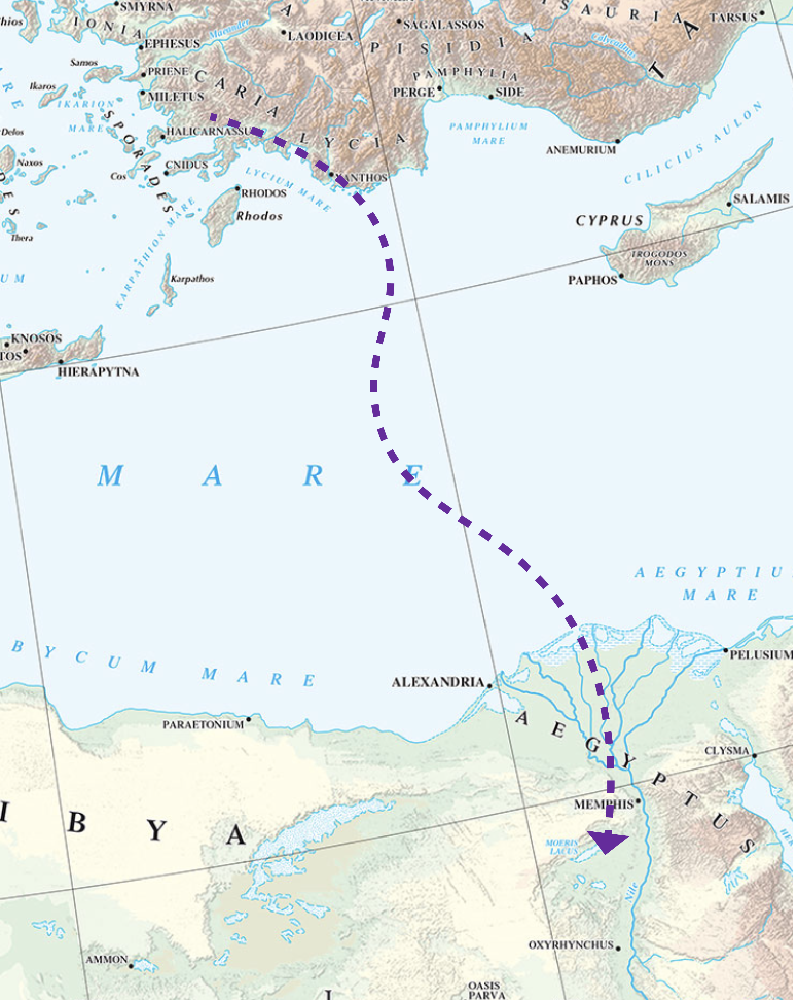
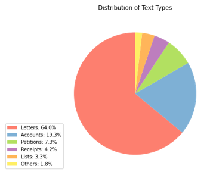
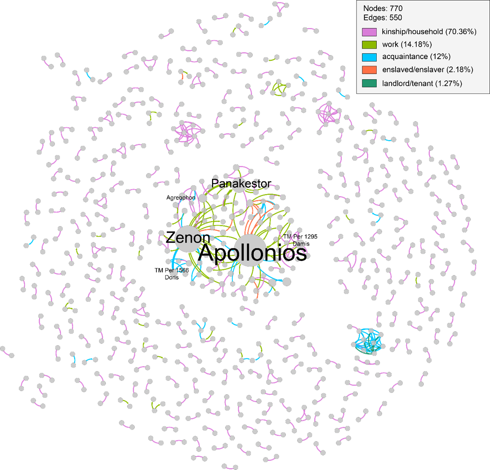
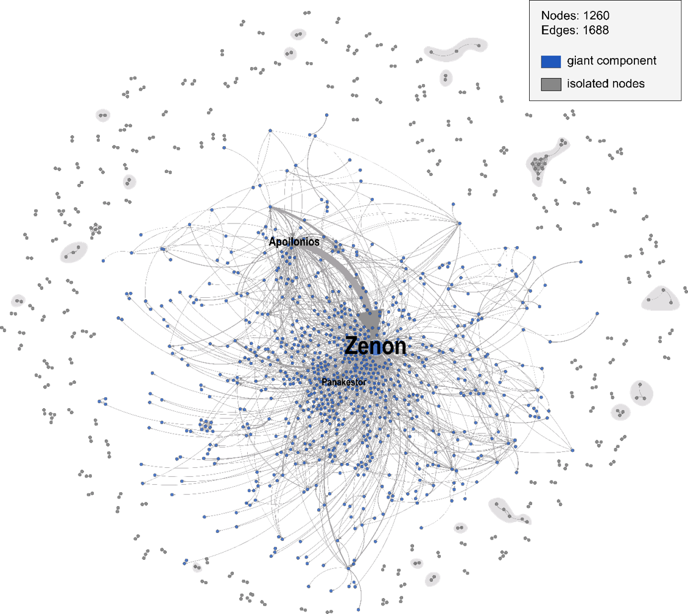
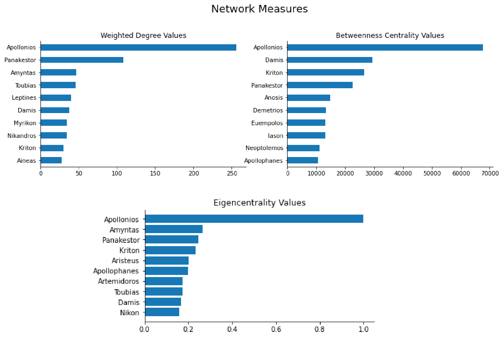

Social Network Analysis as an exploratory tool for analyzing large corpora of papyri
Fernanda Alvares Freire
University of Rostock, Technische Universität Darmstadt
DH2024
August 06, 2024

Based on doctoral research (Universität Münster, Dec. 2023)
Goals:
- Evaluate Social Network Analysis as a methodological approach to examine patterns of social interaction as represented in papyri
- Explore the potential applications of computational analysis to the digital papyri data that is already available
for example...
papyri.info
and...
Trismegistos
Today's talk
Identifying key actors in a large corpus with the help of SNA.
1. Context
The Zenon Archive
|

Detail and emphasis on the Barrington Atlas, no. 1. |
Zenon's private and official businesses
|
The Texts of the Zenon Archive
|  |
The documents of the archive
|
2. Methodological Approach
 |
Building a local database
|
Relationships and Interactions
| Interaction | Relationship |
|
|
Example
P. Cairo Zen. I 59016
|
r |
|
Demetrios to Zenon greeting. I have spent my travel allowance because of some purchases in Tyre. Therefore, you would do well to give 150 drachmas to Nikadas who has brought the letter to you. Charmos finished before me and went ahead, otherwise I would have sent him along (with Nikadas). Make certain too that you send Nikadas to Beirut safely. Also, write to me where the money must be sent. Good-bye. (Year) 27, Apellaios 13. To Zenon. From Demetrios the scribe in Cyprus, (regarding) 150 drachmas. White, Ancient Letters (1986), 5. |
Relationships
|  |
The majority of the relationships registered are declared in the texts as markers of identity. |
Interactions
|  |
Clearly more intricate than the network of relationships. Zenon unsurprisingly has a high impact in the network. |
3. Identifying Relevant Individuals
What can we tell from the network measures?
List of potentially relevant social actors:
|
|
|
- The values of the three measures have to be taken into consideration - and also how they are measured!
- It is essential to go back to the sources and contextualize the results
- Definition of the scope of the research: from 2267 individuals to a list of 19 potentially relevant individuals
4. Concluding Remarks
Takeaways and Outlook
- We were able to successfully identify key actors in the sources: valuable tool for exploring the corpus
- The model for the database of interactions/relationships can be adapted to different corpora/research questions
- Language technologies can improve the collection of data, which was done manually for the interactions